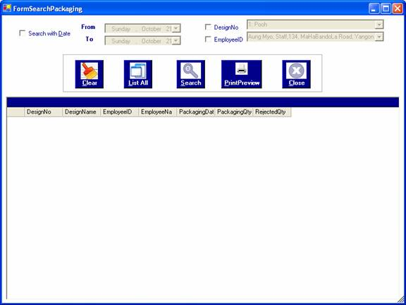

How to process searching for Packaging
After you successfully log in to the system as a manager or an administrator, you can access cutting information by choosing the required options in the form.
To open the form, click on the Search Menu and choose the "By Packaging " . The "Search Packaging " form will be appeared.

Searching method is similar to Search Cutting Form. Therefore, see Search Cutting